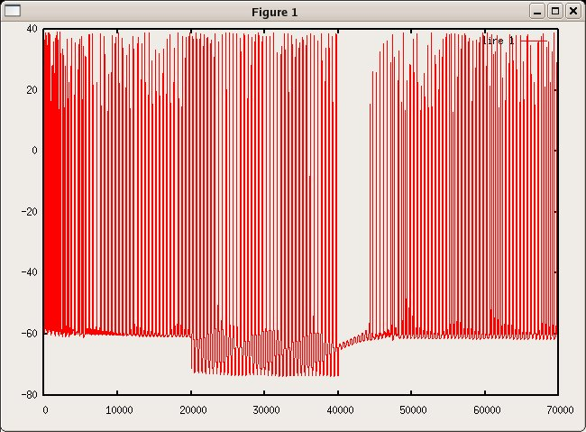
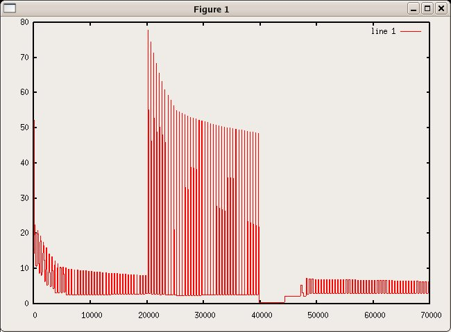

This is the readme for the model code associated with the publication Wang XJ, Liu Y, Sanchez-Vives MV, McCormick DA. Adaptation and temporal decorrelation by single neurons in the primary visual cortex. J Neurophysiol. 2003 Jun;89(6):3279-93. Epub 2003 Mar 20 Usage: Extract the archive and cd to the newly created directory. Compile with a command like: gcc -o run driver.c -lm Then run with: ./run After a minute the program completes and data files are generated for figure 1 from the paper. out.dat.a3 corresponds to figure 1A:  f_inst.dat.a3 corresponds to figure 1D: 